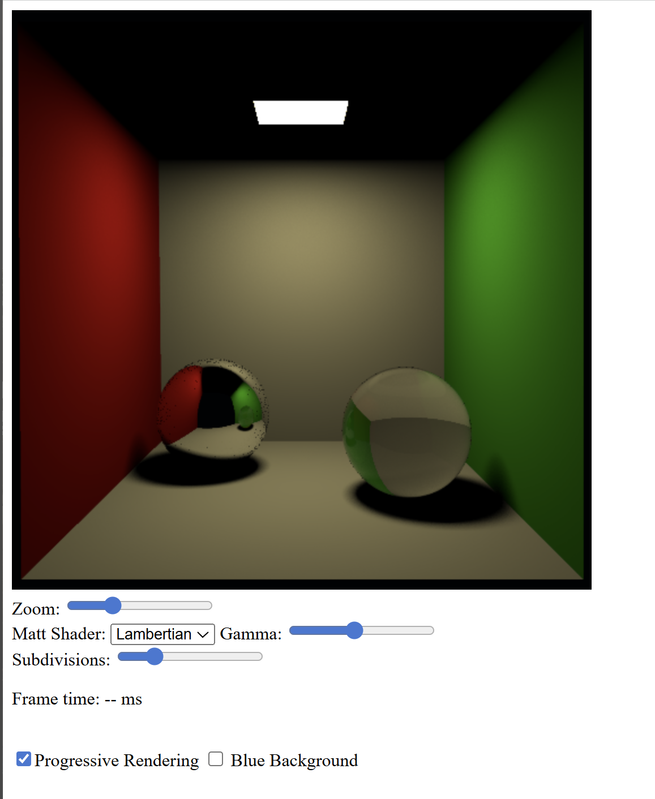
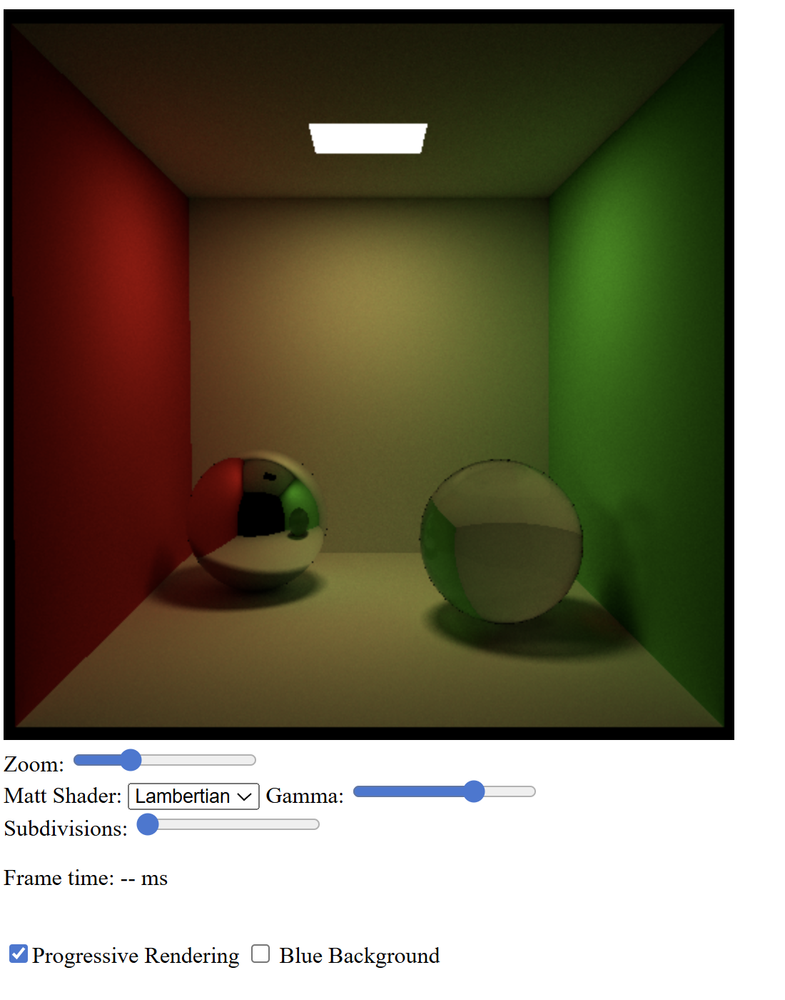
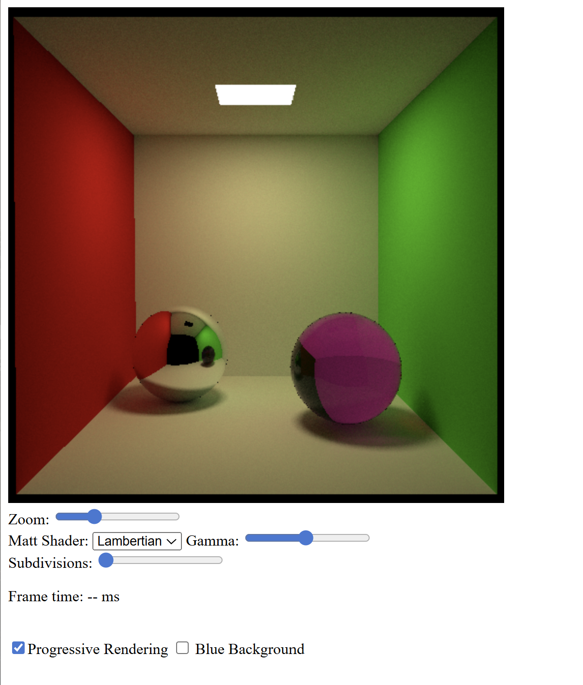

Exercise 1 — Fresnel-based transparency
Starting from the Cornell box scene with a mirror sphere and a glass sphere, I replaced the simple refraction-only shader with a physically based transparent material shader.
I implemented a fresnel_R function based on Fresnel equations to compute
the reflectance R as a function of the incident angle.
Total internal reflection is handled by forcing R = 1.
The Fresnel reflectance is used as a probability in a Russian roulette to choose between reflection and refraction at each hit. Indirect illumination is disabled at this stage to isolate the Fresnel effect.
Source code: GitHub – Worksheet 8 / Exercise 1
Exercise 2 — Indirect illumination and caustics
In this step, I enabled indirect illumination by allowing secondary ray bounces, while disabling the environment light to focus on light transport inside the scene.
To correctly render caustics, I set the emit flag to true for specular materials (mirror and transparent). This allows light paths to contribute radiance even though direct lighting is not explicitly evaluated in these shaders.
As a result, light focusing effects caused by reflection and refraction become visible on nearby surfaces.
Source code: GitHub – Worksheet 8 / Exercise 2
Exercise 3 — Absorption in transparent media
Finally, I added absorption inside transparent objects using Bouguer’s law of exponential attenuation. A non-zero RGB extinction coefficient is assigned when the glass sphere is hit.
When a ray travels inside the transparent medium, the beam transmittance
Tr = exp(-σt · s) is computed based on the traveled distance.
Russian roulette is used to decide whether the ray is absorbed or transmitted.
The path throughput is updated using the RGB transmittance, which gives the glass sphere a colored appearance that depends on the traveled distance.
Source code: GitHub – Worksheet 8 / Exercise 3